Dos mundos, una sola radiación
Cada día, en los hospitales de todo el mundo, la radiación ionizante se usa para mirar dentro del cuerpo sin abrirlo y para destruir tumores. En medicina existen dos grandes "mundos" que la aprovechan, y conviene distinguirlos desde el principio porque la radiación nace en lugares distintos:
-
Radiología
La radiación sale de una máquina externa (un tubo de rayos X, un tomógrafo) y atraviesa al paciente. Muestra la anatomía: huesos, órganos, estructuras.
-
Medicina nuclear
Se administra un radiofármaco y la radiación nace dentro del paciente, en el órgano que se quiere estudiar. Muestra la función: el metabolismo, el flujo de sangre, la actividad de un tejido.
Y existe un tercer uso, la radioterapia, que no busca "ver" sino tratar: dirige radiación (externa o interna) contra las células cancerosas para destruirlas. En las próximas secciones verás cada técnica con sus imágenes y sus aplicaciones reales.
La resonancia magnética (RM) y el ultrasonido (ecografía) son técnicas de imagen muy usadas, pero no usan radiación ionizante: la RM usa campos magnéticos y ondas de radio, y la ecografía usa sonido. La radiación ionizante es patrimonio de la radiología y de la medicina nuclear.
Esta fórmula resume cómo se debilita cualquier haz de radiación al atravesar la materia. \(I_0\) es la intensidad inicial, \(I\) la que queda después de recorrer un espesor \(x\), y \(\mu\) es el coeficiente de atenuación, que depende del material. Cuanto más denso el tejido (un hueso, el plomo de un delantal), más grande es \(\mu\) y más rápido se frena la radiación. Por eso en los huesos los rayos X dejan "menos rayos" y en la placa aparecen blancos: es la misma física que protege a los técnicos detrás de las paredes de plomo.
Radiología: rayos X, mamografía, TC y fluoroscopia
Todo empezó en 1895. El físico alemán Wilhelm Röntgen descubrió, casi por accidente, que una pantalla fluorescente brillaba cuando hacía pasar corriente por un tubo de vacío cubierto de cartón: nacía una radiación desconocida que llamó "rayos X". Pocos días después tomó la primera radiografía de la historia —la mano de su esposa Anna Bertha, con su anillo de bodas— y en 1901 recibió el primer Premio Nobel de Física. Los rayos X se convirtieron, literalmente, en una ventana al interior del cuerpo.
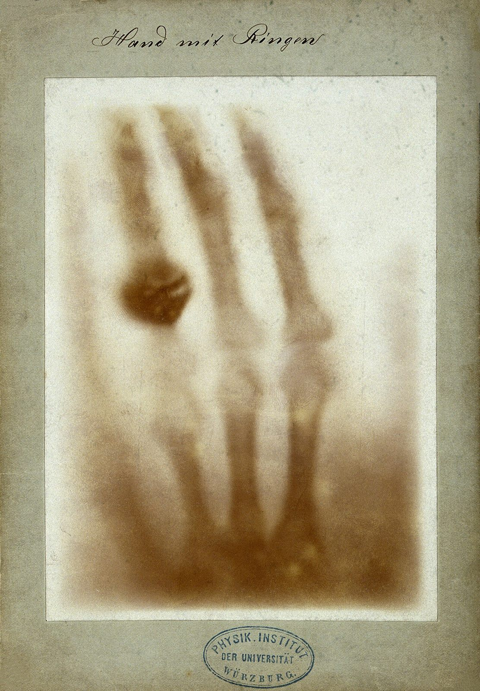
La radiografía simple sigue siendo el examen más común del mundo: huesos fracturados, tórax, dientes, abdomen. Es rápida, barata y con una dosis de radiación muy baja. Su límite es que comprime la información tridimensional en una sola imagen: dos huesos pueden superponerse y "esconderse".
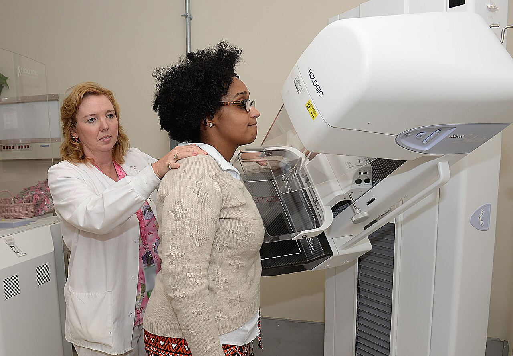
La mamografía es una radiografía especializada de baja energía para estudiar la mama y detectar el cáncer de mama en etapas tempranas, cuando todavía no se palpa. Es el examen de cribado que ha contribuido a reducir la mortalidad por este tipo de tumor en los países que lo implementaron.
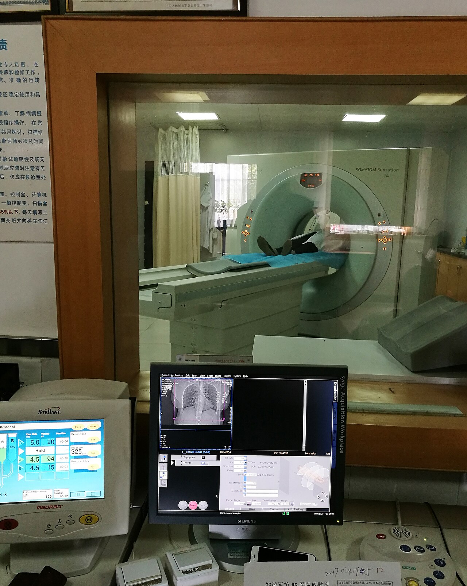
La tomografía computada (TC), desarrollada por Godfrey Hounsfield (1971, Premio Nobel en 1979), resolvió el problema de la superposición: un tubo de rayos X gira alrededor del paciente mientras una computadora reconstruye cortes transversales del cuerpo, como rodajas de una manzana. Con esos cortes se pueden armar imágenes tridimensionales. La TC muestra con enorme detalle el interior del cráneo, el tórax, el abdomen y la columna. Su costo es una dosis mayor que la de una radiografía simple —aun así, muy inferior a la que causa daño—.
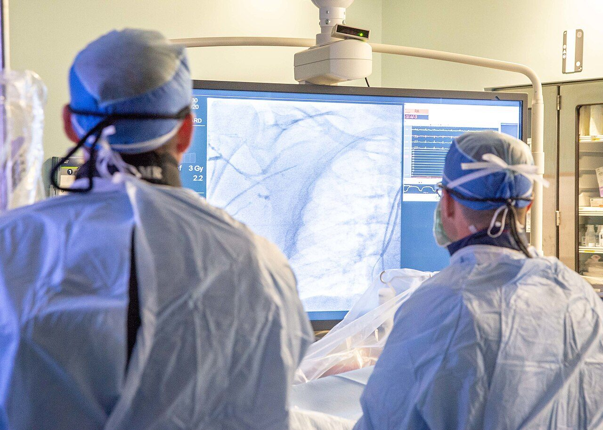
La fluoroscopia es una radiografía en tiempo real, como un video de rayos X. Se usa en el quirófano con los "arcos en C" (C-arm) para ver en vivo el paso de un catéter, una guía o un stent: cateterismos cardíacos, colocación de prótesis, estudios del aparato digestivo con contraste.
Ninguno de los equipos de esta sección usa radioisótopos. Los rayos X nacen en un tubo de vacío: electrones acelerados a gran velocidad chocan contra un blanco metálico (el ánodo) y en esa frenada emiten radiación electromagnética ionizante, el llamado bremsstrahlung ("radiación de frenado"). La radiación es la misma familia que los rayos gamma, pero su origen es eléctrico, no nuclear.
Gammagrafía: la cámara gamma
Aquí empieza la medicina nuclear. Se administra al paciente un radiofármaco que se acumula en el órgano de interés. Ese órgano emite rayos gamma, y una cámara gamma —un gran detector de cristal con fotomultiplicadores— los capta desde afuera y arma una imagen de dónde está concentrado el radiofármaco. Si un tejido concentra de más o de menos, hay un problema: la medicina nuclear no ve estructuras, ve funciones.
El protagonista indiscutido es el Tc-99m (tecnecio-99m): se usa en más del 80% de los procedimientos de medicina nuclear del mundo. Es un isótopo de vida media corta (unas 6 horas), que emite gamma de energía ideal para la cámara. Se obtiene del decaimiento del Mo-99, que se fabrica en reactores nucleares de investigación. Argentina produce Mo-99/Tc-99m en el reactor RA-3 del Centro Atómico Ezeiza y abastece al mercado regional: sin reactores nucleares, la medicina nuclear moderna no existiría.
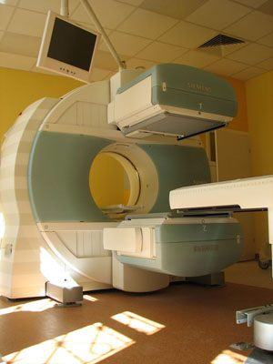
La gammagrafía plana es la aplicación más sencilla: la cámara está quieta y produce una imagen en dos dimensiones. Es la técnica de la gammagrafía ósea, uno de los exámenes más pedidos, que detecta metástasis en los huesos mucho antes de que se vean en una radiografía: el radiofármaco se acumula en las zonas de recambio óseo acelerado.
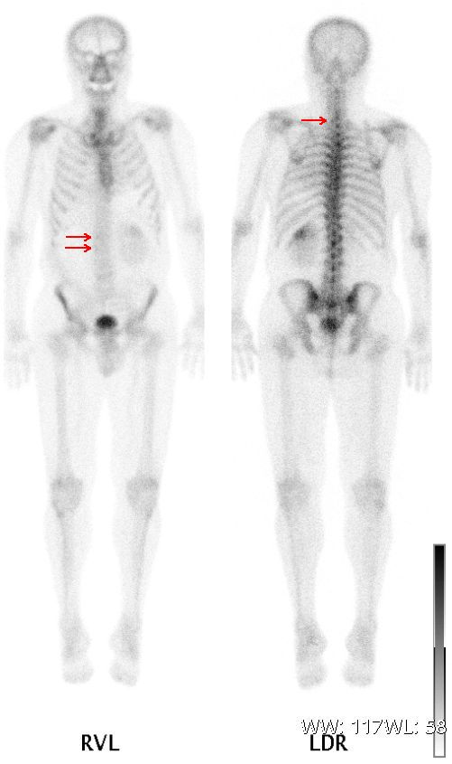
Cada órgano tiene su "receta": distintos radiofármacos se dirigen a distintos tejidos. Esta es la tabla práctica que resume los estudios más frecuentes:
| Órgano | Estudio | Para qué se pide |
|---|---|---|
| Huesos | Gammagrafía ósea | Metástasis, infecciones, fracturas ocultas |
| Tiroides | Gammagrafía / captación de I-131 | Nódulos, hipertiroidismo, función tiroidea |
| Corazón | Perfusión miocárdica (MUGA) | Isquemia, evaluación de la bomba cardíaca |
| Riñones | Renograma (MAG3, DTPA) | Función renal de cada riñón por separado |
| Pulmones | Ventilación/perfusión (V/Q) | Embolia de pulmón |
| Ganglio centinela | Linfogammagrafía | Guía en cirugía de cáncer de mama y melanoma |
| Hígado / vías biliares | HIDA | Vesícula y flujo de bilis |
El RA-3 del Centro Atómico Ezeiza produce el Mo-99 del que se extrae el Tc-99m. Argentina es uno de los pocos países del mundo con la cadena completa: del reactor al hospital, pasando por la radiofarmacia.
SPECT: la gammagrafía en tres dimensiones
La SPECT (tomografía computarizada por emisión de fotón único) es la versión "tomográfica" de la gammagrafía. La cámara gamma, en vez de quedarse quieta, rota alrededor del paciente y va tomando imágenes desde cientos de ángulos. Una computadora las combina y reconstruye cortes tridimensionales, lo que permite localizar con mucha más precisión dónde está el radiofármaco en profundidad.
Para que la imagen tenga sentido, los fotones deben llegar "en línea recta": por eso los detectores llevan un colimador, una rejilla de plomo que solo deja pasar los rayos gamma que llegan en la dirección correcta. Es el mismo principio que el estenopeico de una cámara fotográfica.
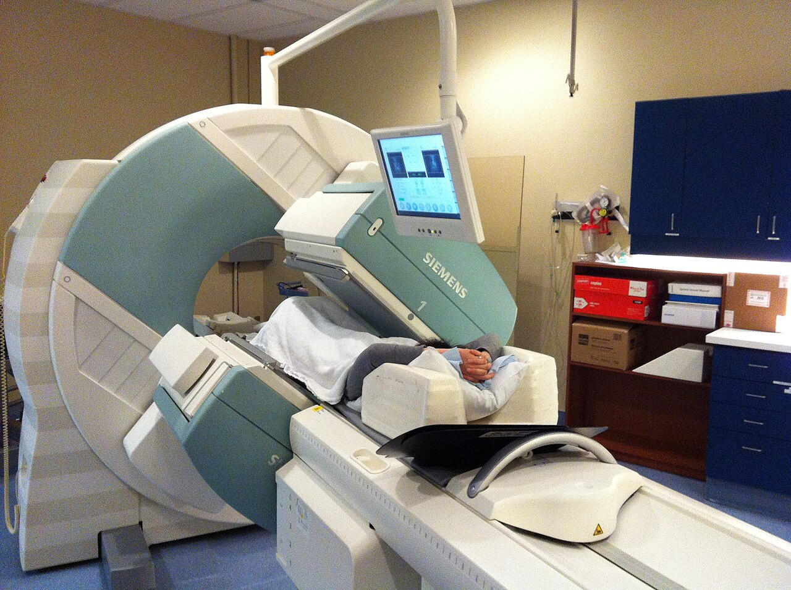
Los usos más frecuentes de la SPECT son la perfusión miocárdica (estudiar si el músculo del corazón recibe suficiente sangre, clave para diagnosticar la enfermedad coronaria), la SPECT cerebral (flujo sanguíneo del cerebro, útil en epilepsia y demencias) y la SPECT ósea. Los equipos modernos combinan la SPECT con un tomógrafo de rayos X: la SPECT/CT superpone la información funcional con la anatómica en una sola imagen, y es la tecnología de punta para localizar lesiones con exactitud milimétrica.
PET y PET/CT: la física del positrón
La PET (tomografía por emisión de positrones) es la joya de la medicina nuclear diagnóstica. Usa radiofármacos que emiten positrones (e⁺), la antimateria del electrón. Cuando un positrón se encuentra con un electrón del tejido, ambos se aniquilan y su masa entera se transforma en energía, según la famosa fórmula \(E = mc^2\): nacen dos fotones gamma de 511 keV que salen en direcciones exactamente opuestas.
El escáner PET es un anillo de detectores que rodea al paciente. Los detectores opuestos que registran dos fotones al mismo instante permiten dibujar una línea sobre la que ocurrió la aniquilación; juntando miles de "coincidencias" se localiza el punto exacto en 3D. Es como triangulación con fotones.
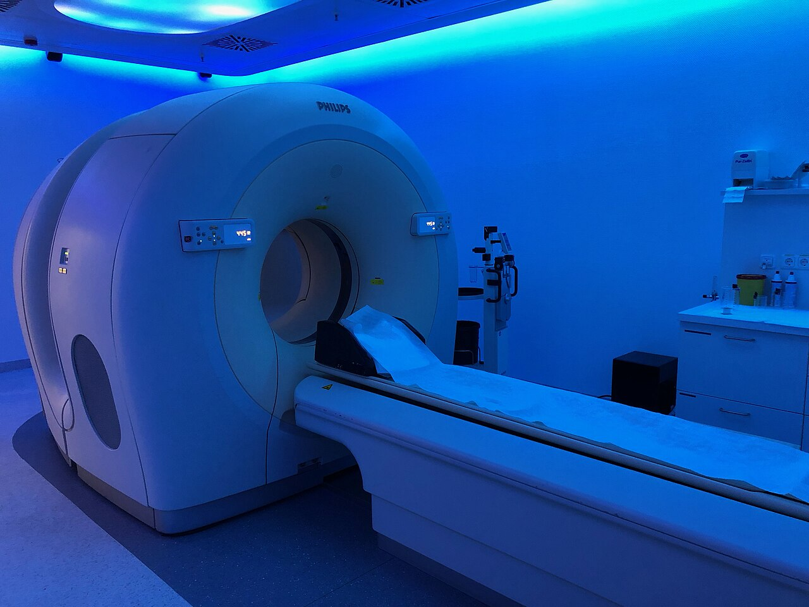
El radiofármaco estrella es la F-18 FDG (fluorodesoxiglucosa): una molécula de glucosa marcada con el isótopo flúor-18. Como las células tumorales son auténticas "devoradoras de glucosa", acumulan FDG y brillan en la imagen. Por eso el PET oncológico es clave para estadificar un cáncer (ver si se diseminó), detectar recaídas y evaluar si un tratamiento está funcionando. También se usa en cardiología (miocardio viable) y neurología (Alzheimer, epilepsia).
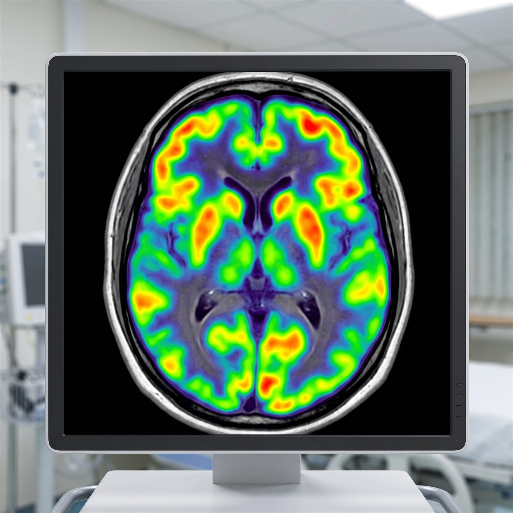
Los escáneres modernos son híbridos: PET/CT y PET/MRI combinan la imagen funcional del PET con la anatómica del tomógrafo, de modo que el médico ve el tumor (anatomía) y su actividad metabólica (función) superpuestos en la misma pantalla. En Argentina, los ciclotrones de Buenos Aires y otras ciudades fabrican el F-18, porque su vida media es de solo 110 minutos: el radiofármaco se produce cerca del hospital y se usa el mismo día.
Radioterapia externa con fotones
La radioterapia es, junto con la cirugía y la quimioterapia, una de las tres grandes armas contra el cáncer: alrededor de la mitad de los pacientes oncológicos la recibe en algún momento. La idea es tan simple como brutal: dirigir radiación ionizante al tumor para que sus células no puedan seguir dividiéndose. La dificultad es que la radiación también daña el tejido sano que atraviesa, así que toda la evolución de la técnica ha buscado dar la máxima dosis al tumor y la mínima a lo demás.
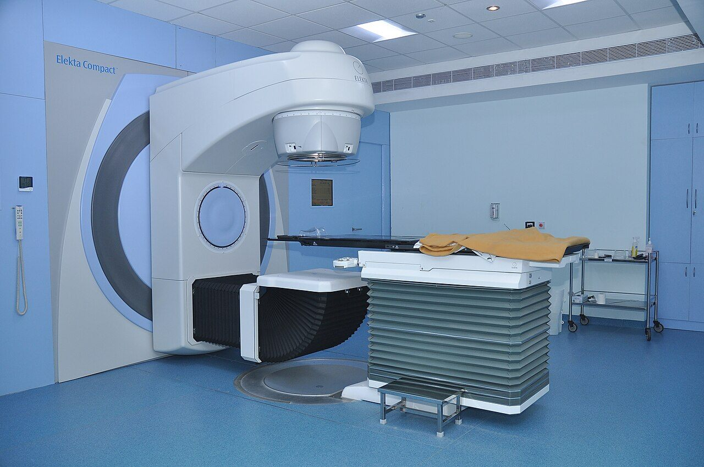
La máquina principal es el acelerador lineal (LINAC): acelera electrones que, al frenarse contra un blanco, generan rayos X de alta energía capaces de alcanzar tumores profundos. El cabezal gira alrededor del paciente y moldea el haz para atacar el tumor desde varios ángulos. Sobre esta base se montaron las técnicas modernas:
Radioterapia conformada tridimensional: el haz se moldea con la forma del tumor visto en la TC de planificación.
De intensidad modulada: un colimador de láminas móviles cambia la intensidad del haz punto por punto, "esculpiendo" la dosis.
El cabezal rota alrededor del paciente mientras el haz cambia continuamente: tratamientos más rápidos y precisos.
Guiada por imágenes: se toma una imagen justo antes de tratar para corregir la posición exacta del tumor.
Para tumores cerebrales y pequeños, existe la radiocirugía estereotáctica (SRS/SBRT): se aplica una dosis altísima en una o pocas sesiones con precisión sub-milimétrica. El Gamma Knife (arriba, en el equipo Perfexion) concentra 192 haces de cobalto-60 sobre un punto exacto del cráneo, como lupa con 192 luces; el CyberKnife hace lo mismo con un acelerador robótico sobre una mesa móvil.
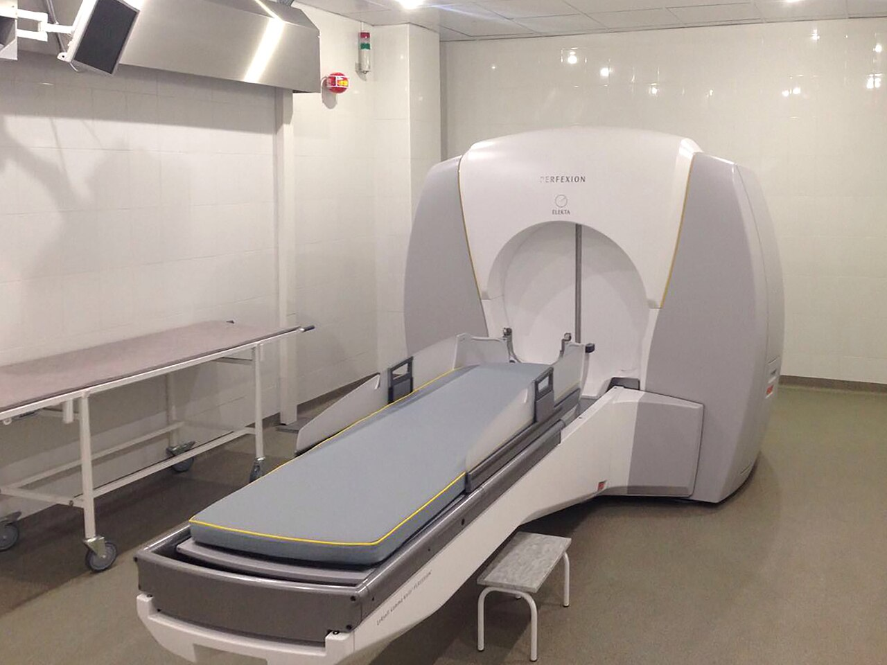
El cobalto-60 que producen las centrales de Embalse (Córdoba) y la CNEA no solo esteriliza: durante décadas fue la fuente de la teleterapia en el país y en toda América Latina. Argentina es de los pocos países del mundo capaces de producir Co-60 de uso médico.
Protones e iones de carbono: el pico de Bragg
Los rayos X depositan su energía en forma exponencial: máxima cerca de la superficie y decreciente en profundidad. Los protones —núcleos de hidrógeno acelerados a gran velocidad— hacen algo distinto y extraordinario: depositan poca energía al entrar, la liberan casi toda al final de su camino —en el famoso pico de Bragg— y luego la dosis cae a prácticamente cero. Ajustando la energía del haz se coloca ese pico exactamente a la profundidad del tumor.
La consecuencia es clínica y hermosa: el tumor recibe la dosis completa, los tejidos que están antes reciben poca, y los que están después no reciben nada. Es el tratamiento de elección para tumores que viven pegados a órganos críticos —cerebro, ojos, base del cráneo, médula espinal— y para los niños, porque su radiación se está desarrollando. Los iones de carbono son aún más pesados y su pico es más agudo; se usan en Japón, Alemania e Italia.
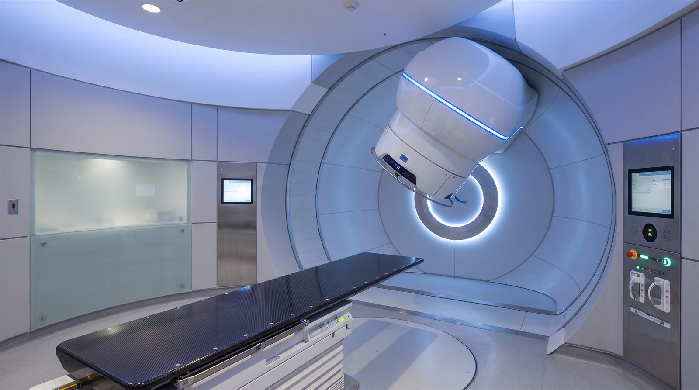
La contracara es el precio: un centro de protonterapia cuesta entre 30 y 60 millones de dólares y necesita un ciclotrón o sincrotrón dedicado. En Argentina todavía no hay un centro de estas características; en la práctica se reserva para los casos en que la ventaja física se traduce en una ventaja clínica real.
Braquiterapia: la fuente, adentro
La braquiterapia ("tratamiento de corta distancia") da vuelta el planteo de la radioterapia externa: en vez de traer el haz desde afuera, lleva la fuente radiactiva hasta el tumor. Como la dosis cae muy rápido con la distancia, se logra una dosis altísima en el tumor con un daño mínimo a los tejidos sanos que lo rodean.
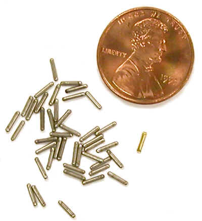
Hay dos grandes modalidades. En la braquiterapia de baja tasa (LDR), decenas de semillas minúsculas de I-125 o Pd-103 se implantan de forma permanente en el tumor —el caso típico es el cáncer de próstata— y van liberando su radiación durante meses hasta desactivarse. En la alta tasa (HDR), una fuente de Ir-192 se introduce con un aplicador durante unos minutos y se retira: se usa en tumores ginecológicos, de mama y de cabeza y cuello. También existen placas oculares con I-125 para el melanoma del ojo.
Las semillas de I-125 que se usan en el país para braquiterapia de próstata se producen en el reactor RA-3 del Centro Atómico Ezeiza: otra pieza de la cadena argentina del átomo al hospital.
Radiofármacos terapéuticos y teranóstica
La terapia molecular lleva la radioterapia a la última escala: en vez de apuntar un haz, se administra un radiofármaco que viaja por la sangre, reconoce la célula enferma por su biología y le deposita la radiación desde adentro. Cada radiofármaco es una "llave" molecular que abre la cerradura de un tipo de célula.
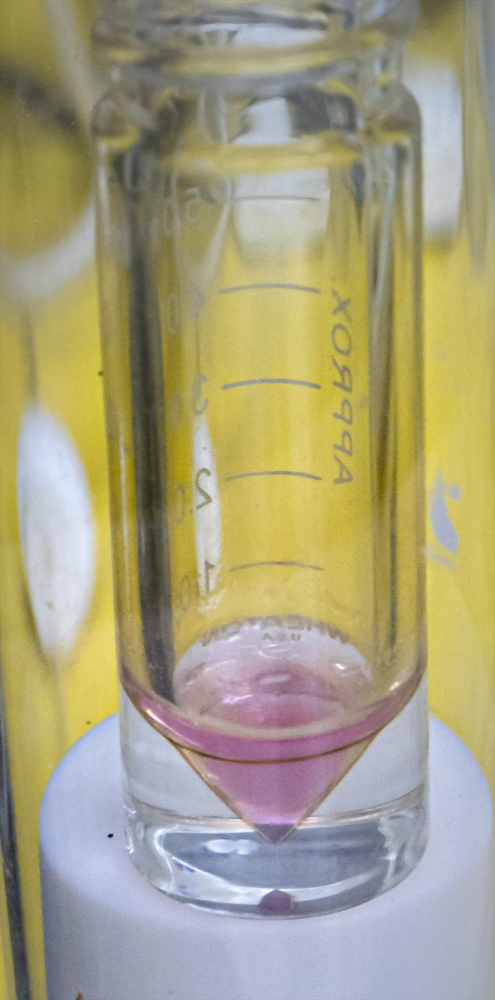
El clásico: la tiroides concentra yodo, así que el I-131 se acumula ahí. Una cápsula destruye el tejido tiroideo enfermo (cáncer o hipertiroidismo) sin tocar el resto del cuerpo.
Lu-177-DOTATATE (aprobado por la FDA en 2018) para tumores neuroendocrinos; Lu-177-PSMA para el cáncer de próstata avanzado.
Anticuerpos monoclonales + radiactividad (90Y-ibritumomab) que "etiquetan" a las células de ciertos linfomas para destruirlas.
Sm-153, Sr-89 y Ra-223 (alfa) alivian el dolor óseo de las metástasis; el Ra-223 incluso prolonga la supervivencia.
Microesferas de 90Y inyectadas en la arteria que alimenta un tumor hepático: la radiación llega por dentro del propio tumor.
Ac-225 y Bi-213 emiten partículas alfa de muy corto alcance y enorme energía por célula: precisión extrema contra metástasis microscópicas.
La frontera actual se llama teranóstica (terapia + diagnóstico): se usa la misma molécula para ver y para tratar. Se inyecta una versión "de imagen" que muestra dónde está el tumor (por ejemplo 68Ga-PSMA) y, si el tumor capta, se administra la versión "de tratamiento" (177Lu-PSMA) que va exactamente al mismo lugar. El principio médico se resume en una frase: "lo que puedes ver, puedes tratarlo".
BNCT: la terapia argentina
La Terapia por Captura Neutrónica de Boro (BNCT) es una técnica de precisión extrema, y Argentina fue pionera mundial en su aplicación clínica. Funciona en dos pasos: primero se administra al paciente un compuesto con boro-10, que se acumula selectivamente dentro de las células tumorales; después se irradia la zona con neutrones de baja energía. Cuando un neutrón es capturado por el boro-10, la reacción libera una partícula alfa y un núcleo de litio-7 que destruyen la célula tumoral desde adentro — y nada más: esas partículas recorren apenas 5–9 micrómetros, el diámetro de una célula.
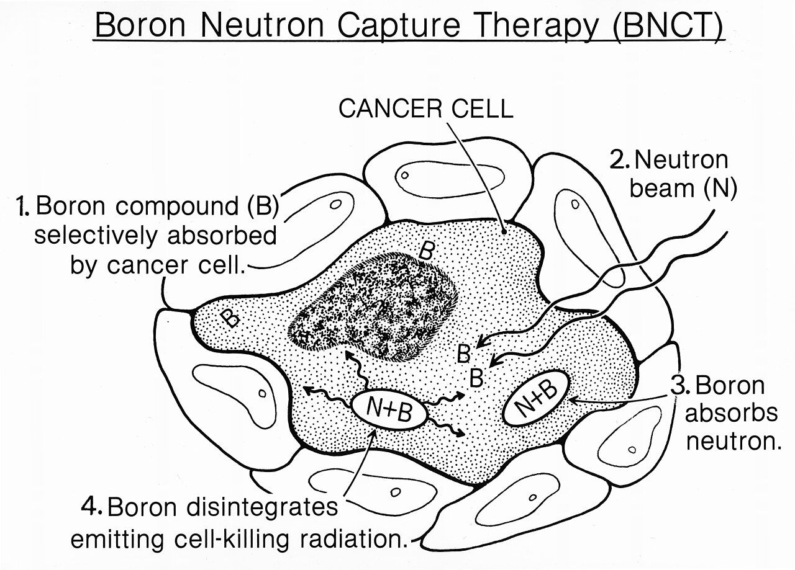
La historia local comenzó en el Centro Atómico Bariloche: el reactor RA-6 fue acondicionado en los años 90 para producir haces de neutrones aptos para ensayos clínicos, y Argentina trató pacientes reales con melanoma y glioblastoma multiforme. El desafío actual es reemplazar el reactor por un acelerador compacto instalable en un hospital —el proyecto que lidera el Dr. Andrés Kreiner (CNEA-CONICET-UNSAM)— para masificar la técnica. La ecuación de la reacción y el diagrama animado completo están en la página de Aplicaciones de la Energía Nuclear.
Esterilización e irradiación: el hospital invisible
La tecnología nuclear también salva vidas antes de que el paciente llegue al quirófano. La mayor parte del material médico de un solo uso —jeringas, agujas, catéteres, guantes, suturas, implantes— se esteriliza con radiación gamma de cobalto-60. Los productos pasan por lotes dentro de una instalación blindada, y la radiación elimina bacterias y virus sin calor ni químicos: no se puede esterilizar con vapor algo que se derrite.
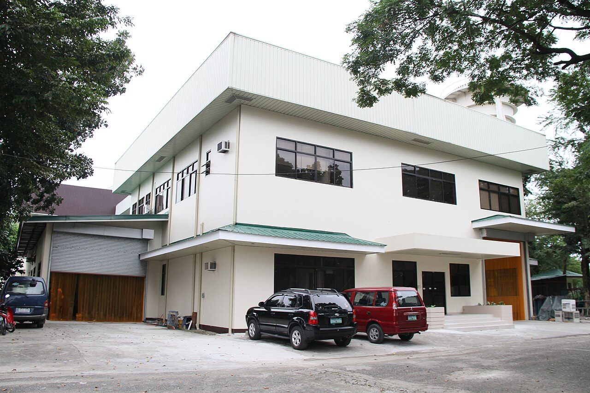
Otro uso callado pero vital es la irradiación de sangre: antes de transfundir a pacientes con el sistema inmune debilitado (trasplantes, quimioterapia), las bolsas de sangre se irradian para inactivar los linfocitos del donante y así prevenir una complicación grave llamada enfermedad injerto contra huésped. El mismo tipo de instalaciones se usa para irradiar alimentos y conservar su seguridad, tema que se desarrolla en la página de Aplicaciones.
El Co-60 se produce en la central nuclear de Embalse (Córdoba) y la CNEA fabrica las fuentes selladas que esterilizan insumos en Argentina y en toda América Latina. Es una de las pocas cadenas completas de Co-60 de uso médico del mundo.
Conceptos Clave
- ✦ La radiología (rayos X, mamografía, TC, fluoroscopia) usa una fuente externa; la medicina nuclear (gamma, SPECT, PET) usa radiofármacos que emiten desde adentro.
- ✦ El Tc-99m interviene en más del 80% de los procedimientos de medicina nuclear; se obtiene del Mo-99 producido en reactores (RA-3 en Ezeiza).
- ✦ En el PET, un positrón se aniquila con un electrón y produce dos fotones de 511 keV; la F-18 FDG marca las células que consumen mucha glucosa (los tumores).
- ✦ La radioterapia usa fotones (LINAC, IMRT, VMAT, SRS/SBRT), partículas (protones con pico de Bragg, iones de carbono) y braquiterapia con la fuente dentro del tumor.
- ✦ Los radiofármacos terapéuticos (I-131, Lu-177, Ra-223, Ac-225) llevan la radiación a la célula enferma; la teranóstica usa la misma molécula para ver y para tratar.
- ✦ La BNCT destruye células tumorales con boro-10 + neutrones: Argentina fue pionera mundial (RA-6 en Bariloche) y desarrolla un acelerador compacto para masificarla.
- ✦ El Co-60 de Embalse esteriliza insumos médicos e irradia sangre: la tecnología nuclear también protege a los pacientes antes del quirófano.